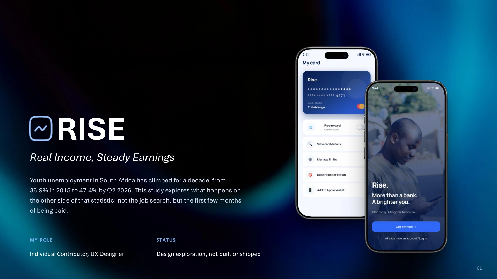

01RISE · REAL INCOME, STEADY EARNINGS01 / 20

Scroll or swipe through the slides. Use the arrows or keyboard arrow keys to move one slide at a time. Select a slide to zoom in. The original notebook sketches are followed by the app user flow and high-fidelity interface screens.
Scope and evidence
Back to selected work ↑This is a self-directed design exploration informed by secondary research. Thabo is a composite persona, and the statistics and assumptions should be validated with first-job earners. The concept has not been built or shipped.